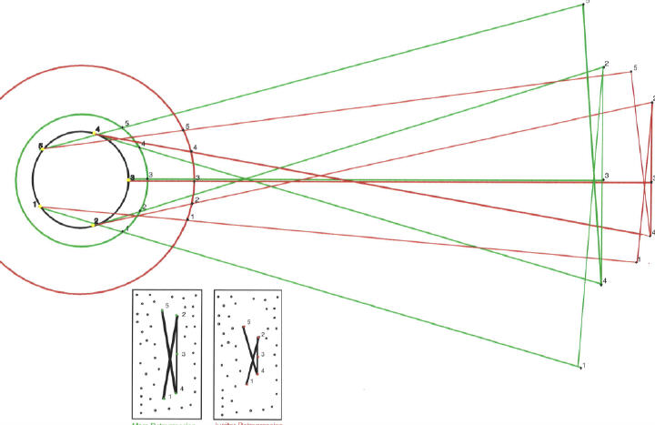

Figure 6: Copernican explanation for the retrogression appearances of Mars and Jupiter.
The "marvelous effect" of retrograde motion is, according to Galileo, clarified with remarkable simplicity in a heliostatic system. In this figure we see how the geometry must produce retrograde motion at opposition, increased brightening of a planet at its midpoint of retrogression, and a pattern of retrogressions as well. The extent of Jupiter's retrogression must be smaller than that of Mars'.